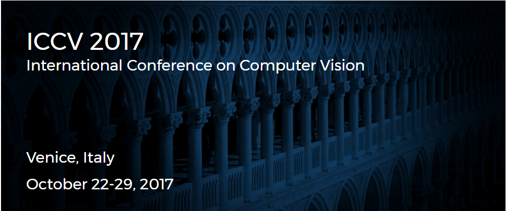

2017年国际计算机视觉会议（ICCV2017）论文录用名单近日发布，我实验室硕士生杨骏锋、博士生傅雪阳（指导教师丁兴号教授）在超分辨率贝叶斯方面的研究论文“PanNet:A deep network architecture for pan-sharpening”被该会议录用。这也是我实验室硕士生第二次作为第一作者在国际计算机视觉顶级会议上发表论文。

杨骏锋、傅雪阳分别系我校信息科学与技术学院通信工程系智能数据分析与处理实验室2015级硕士生及2014级博士生，该篇论文的完成，得到了丁兴号教授的悉心指导，在超分辨率贝叶斯法方面的发展起到了新助兴的作用。
ICCV 的全称是 IEEE International Conference on Computer Vision，即国际计算机视觉大会，由IEEE主办，与计算机视觉模式识别会议（CVPR）和欧洲计算机视觉会议（ECCV）并称计算机视觉方向的三大顶级会议。ICCV 每两年举办一次，2017年ICCV将于10月22--29日在意大利威尼斯举办。ICCV被中国计算机学会（CCF）列为A类会议。根据CCF分类标准，“A类会议指国际上极少数的顶级学术会议，鼓励我国学者去突破”。
ICCV2017总投稿量达2000多篇，最终录取600多篇，录取率约为28%。此次杨骏锋、傅雪阳在ICCV2017会议上取得的成果实现了我校在计算机视觉顶级会议上的又一突破。这也是我实验室科研建设的重要成果之一。同时标志着我校计算机视觉领域的科研水平取得了长足的进步，在计算机视觉和模式识别领域不断产生出国际先进水平的成果。